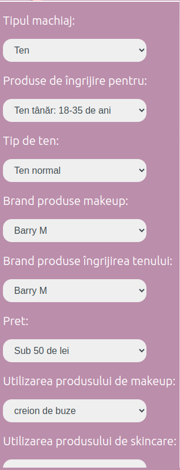

Abstract
MaWA(Makeup Web Assistant) este o aplicație web utilizată pentru a oferi sfaturi privitoare a oferi informații în legătură cu îngrijirea tenului și realizarea machiajului, în funcție de anumite preferințe introduse de utilizator, precum vârstă, tipul de ten, ocazie, buget, etc. Aplicația are o interfață atractivă și permite utilizatorului să își selecteze preferințele și să primească recomandări în funcție de acestea.
Introducere
Scopul aplicației este de a ghida începătorii în utilizarea produselor de machiaj și de îngrijire a tenului, oferind sugestii pe baza unor informații esențiale, introduse de utilizator.
Așa cum a fost menționat anterior, aplicația are rolul de a oferi informații cât mai specifice în legătură cu îngrijirea corectă a tenului, în funcție de tipul de piele al persoanei, de vârsta acesteia, de buget. Pe lângă recomandările legate de produsele de îngrijire, aplicația oferă și informații pentru a realiza un machiaj corect, în funcție de aceleași preferințe selectate de utilizator, dar și de ocazie - pentru această zonă a aplicației, utilizatorul primește atât sugestii de produse de machiaj, cât și câteva tutoriale pentru a învăța să utilizeze produsele recomandate.
Structură
În această secțiune vor fi explicate cele mai importante detalii legate de structura aplicației, dar și câteva informații legate de implementare.
În momentul accesării aplicației, utilizatorul este întâmpinat de o pagina de tip Home, de unde poate afla scopul aplicației și alte informații generale despre aceasta. În partea de sus, utilizatorul poate observa un meniu, de unde poate accesa toate paginile existente în aplicație:
- Home
- About
- Rutina mea
- Recomandări generale
- Makeup
- Login
- Register
- My Account
- Contact
Interfața aplicației a fost adaptată și pentru dispozitivele mobile - meniul din partea de sus se prezintă într-o formă restrânsă, care poate fi extinsă la dorința utilizatorului. Varianta meniului pentru mobil este la fel, fixă, pentru a facilita utilizarea aplicației și accesul la componentele acesteia. Toate paginile sunt disponibile atât în forma pentru desktop, cât și în forma pentru mobil.
Funcționalitate și interacțiunea cu utilizatorul
În această secțiune, vor fi detaliate informații despre fiecare pagină în parte.
Home
În pagina de start, utilizatorul poate interacționa cu meniul și poate afla detalii despre serviciile oferite.
În partea de jos a paginii se află două butoane: Login și Register. Prin click, utilizatorul va fi redirecționat la pagina de Login, respectiv la cea de Register.
About
La nivelul acestei pagini, se pot afla mai multe informații despre aplicație și funcționalitățile acesteia. În josul acestei pagini, deasupra subsolului, se află aceleași două butoane de Login și Register, care servesc același scop ca cel prezentat anterior.
Rutina mea
Secțiunea Rutina mea are rolul de a oferi utilizatorului o serie de produse de îngrijire,
recomandate
în funcție de preferințele și nevoile acestuia. Informațiile oferite în această secțiune sunt bazate pe
datele introduse
de utilizator în profil (vârstă, tipul de ten și momentul zilei când produsul trebuie aplicat). Produsele
sunt împărțite pe etape și
categorii - produse de curățare,
produse pentru hidratare, produse pentru uzul dimineața/seara etc; astfel acestea sunt mai bine
organizate și mai ușor accesibile.
În spatele acestei pagini stă algoritmul de recomandare: în funcție de profilul utilizatorului,
se vor returna produse specifice acestuia.
În baza de date, produsele sunt stocate în funcție de etapă și categorie, iar la acestea sunt asociate
și un tip de ten pentru care produsul este recomandat. Astfel, pentru fiecare etapă a ritualului de
îngrjire,
utilizatorului îi sunt recomandate 3 produse random care se potrivesc tipului de ten al acestuia.
Funcția care realizează această etapă este următoarea:
public static function getRecProducts($skintype_id, $type_id, $age, $is_makeup, $usage_time): array
{
global $conn;
$stmt = $conn->prepare("SELECT p.* FROM products p
JOIN product_types pt on p.type_id = pt.type_id
WHERE pt.usage_time = ? AND
(skintype_id = ? OR skintype_id = 5) AND
p.type_id = ? AND
(age = ? OR age = 0) AND
is_makeup = ?
ORDER BY RAND()
LIMIT 3");
$stmt->bind_param("siiii", $usage_time, $skintype_id, $type_id, $age, $is_makeup);
$stmt->execute();
$stmt->store_result();
$stmt->bind_result($product_id, $name, $price, $image_path, $is_makeup, $age, $brand_id, $skintype_id,
$type_id, $ingredients, $description, $how_to_use, $link, $times_rec);
// create an array to store the products
$products = array();
// fetch the products and create Product objects
while ($stmt->fetch()) {
static::updateTimesRec($product_id);
$product = static::getProduct($product_id, $name, $price, $image_path, $is_makeup, $age, $brand_id,
$skintype_id, $type_id, $ingredients, $description, $how_to_use, $link, $times_rec);
$products[] = $product;
}
$stmt->close();
return $products;
}
Astfel, pentru fiecare categorie, se obține un astfel de rezultat: Recomandări generale
Aici utilizatorul poate vedea produse recomandate pentru alte categorii de vârstă, pentru alte tipuri de ten, ș.a.m.d. Aici se regăsesc atât produse de machiaj, cât și produse de îngrijire. În partea stângă a acestei pagini, se află un meniu pentru a filtra informațiile dorite în funcție de diverse criterii:
Selectând din fiecare categorie, utilizatorul va vedea produsele din baza de date, disponibile pentru fiecare criteriu. pentru această secțiune a paginii nu este nevoie ca utilizatorul să fie logat. În varianta de mobil, filtrele se pot utiliza în cascadă, ceea ce ușurează utilizarea pe ecranele mici.
Pentru generarea produselor, se folosesc funcții de acest tip:
public static function getProductsByBrand(mixed $brandName, mixed $isMakeup): array
{
global $conn;
$stmt = $conn->prepare("SELECT p.* FROM products p JOIN brands b on p.brand_id = b.brand_id WHERE b.name = ? and p.is_makeup = ?");
$stmt->bind_param("si", $brandName, $isMakeup);
return static::executeAndFetchProducts($stmt);
}
public static function getProductsBySkintype(mixed $skintype_id): array
{
$skintype_id = substr($skintype_id, 0, 1);
global $conn;
$stmt = $conn->prepare("SELECT * FROM products WHERE (skintype_id = ? OR skintype_id = 5) AND is_makeup = 0 ORDER BY skintype_id, type_id");
$stmt->bind_param("i", $skintype_id);
return static::executeAndFetchProducts($stmt);
}
În această pagină, se află și un meniu de select pentru a genera topul produselor. Acestea se generează după
preț și vârstă, în format RSS, PDF sau HTML.
Pentru generarea topurilor, s-au folosit funcții pentru a determina cele mai recomandate și dorite produse, de
acest tip:
public static function findMostRecProductsByAge($age): array
{
global $conn;
$stmt = $conn->prepare("SELECT * FROM products WHERE age = ? ORDER BY times_rec DESC LIMIT 10");
$stmt->bind_param("i", $age);
return static::executeAndFetchProducts($stmt);
}
Makeup
În această secțiune a aplicației, se oferă informații în legătură cu produse de machiaj, în funcție de
ocazia
pe care utilizatorul o selectează. De asemenea, pe lângă o listă de produse necesare pentru a realiza
un machiaj reușit și
potrivit momentului și ocaziei, utilizatorul primește acces și la tutoriale video, pentru a învăța să
folosească produsele
recomandate.
În această pagină se află strict produse pentru machiaj.
Varianta pentru mobil are de asemenea filtre în cascadă, ceea ce ușurează experiența utilizatorilor și
le permite sa vadă mai puține produse pe ecranele mici.
Login și Register
Aceste două pagini permit logarea în aplicație, respectiv crearea unui nou cont. La crearea contului, utilizatorul introduce o adresă de email, un nume de utilizator, un nume și un prenume și o parolă. Pentru a se conecta și a beneficia de serviciile aplicației, este suficient ca utilizatorul să își introducă username-ul sau email-ul și parola în formularul de login, iar acesta va fi conectat la aplicație și va avea acces la toate informațiile.
My account
Odată logat în aplicație, userul are acces la zona de My account, de unde poate să vadă numele
introdus
la crearea contului, numele de utilizator, și poate edita opțiunile după care i se oferă recomandările,
precum vârsta,
tipul de ten sau locația. Odată modificate aceste proprietăți, și recomandările oferite de aplicație se
vor modifica.
Pentru a edita informațiile, e suficient ca utilizatorul să introducă informațiile pe care le dorește și să
apese
butonul de save.
Informațiile vor fi actualizate în baza de date și recomandările vor fi oferite în mod corect.
Funcția care se ocupă de update este următoarea:
public static function update(int $userId): bool
{
global $conn;
$age = $_POST['age'];
$gender = $_POST['gender'];
$location = $_POST['location'];
$skin_type = $_POST['skin_type'];
if($skin_type == 'gras'){
$id_skin = 1;
}else if($skin_type == 'normal'){
$id_skin = 2;
}else if($skin_type == 'mixt')
{
$id_skin = 3;
}else if($skin_type == 'uscat'){
$id_skin = 4;
}
$stmt = $conn->prepare("UPDATE users SET age = ?, gender = ?, skintype_id = ?, location = ? WHERE user_id = ?");
$stmt->bind_param("isisi", $age, $gender, $id_skin, $location, $userId);
if ($stmt->execute()) {
error_log("User updated successfully");
$stmt->close();
return true;
} else {
error_log("User updated error");
$stmt->close();
return false;
}
}
Contact
Deși aplicația este intuitivă și foarte ușor de folosit, în zona de contact am ales să adăugăm câteva informații legate de utilizarea acesteia. Aici se pot observa câteva imagini cu aplicația și câteva hint-uri pentru o utilizare mai facilă. Pe lângă aceste informații, au fost adăugate și date de contact.
Tot aici se află și niște butoane rapide pentru a ajunge la celelalte pagini menționate mai sus.
Detalii tehnice
În această parte a documentației vom detalia câteva aspecte tehnice care au rămas nemenționate.
Baza de date a aplicaței are 6 tabele: brands, product_types, products, skintypes, users și videos.
În tabela brands, sunt stocate toate brandurile pentru care există produse. Tabela product_types este
responsabilă pentru a stoca toate tipurile de produse care există disponibile, iar tabela products
stochează efectiv produsele. Tabela skintypes memorează tipurile de piele pentru care se fac recomandări,
tabela users este utilizată pentru a păstra utilizatorii și informațiile acestora, iar tabela videos
este utilizată pentru a recomanda videoclipurile în funcție de ocazie.
Baza de date este MySQL.
Pentru asigurarea backend-ului aplicației, s-a folosit PHP. Pentru request-urile la api-ul aplicației,
se folosește JavaScript.
Frontend-ul a fost realizat folosind HTML și CSS.
Referințe
Validare html: https://validator.w3.org/nu/#textarea
Validare css: https://jigsaw.w3.org/css-validator/#validate_by_input
HTML tutorials: https://www.w3schools.com/html/default.asp
CSS tutorials: https://www.w3schools.com/css/default.asp